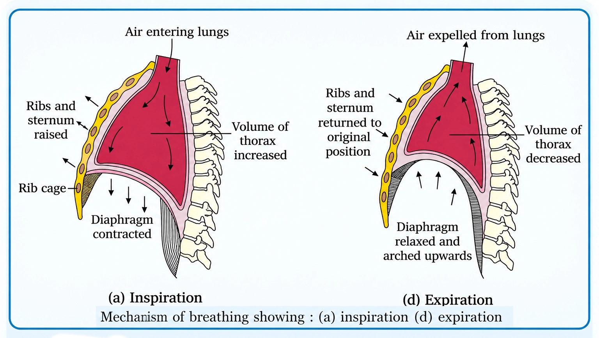
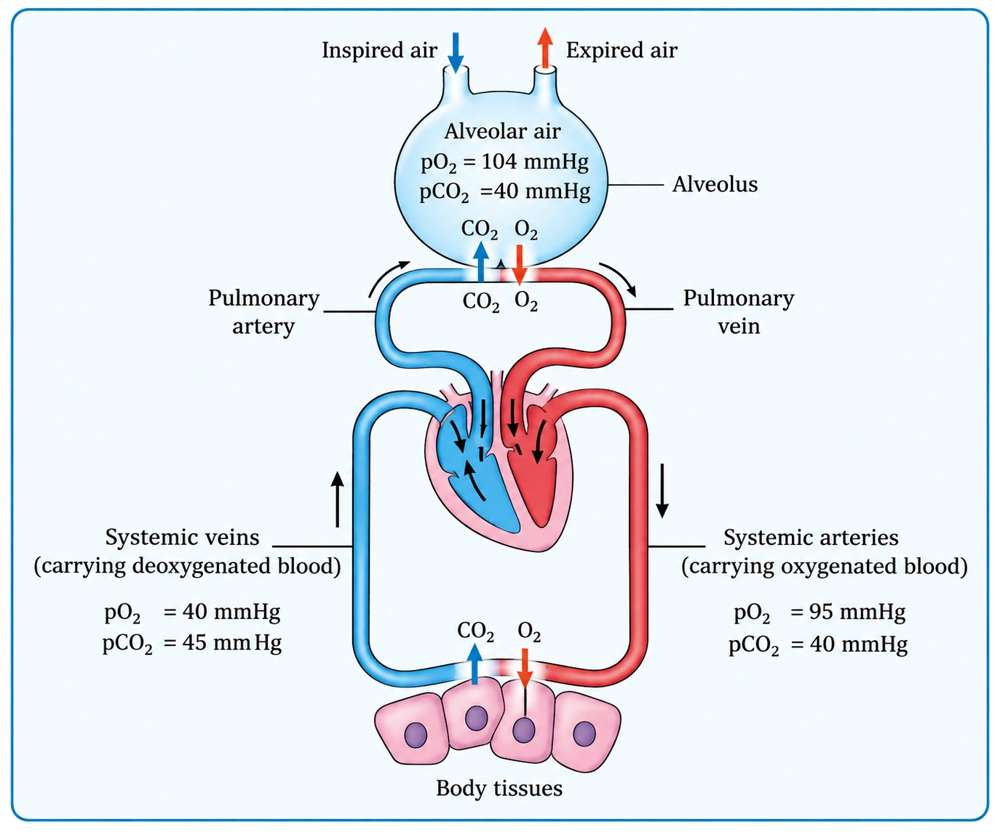

Biology
Chapter 14: Breathing and Exchange of Gases
Continuous O2 supply for energy + continuous CO2 removal to prevent harm
NEED FOR BREATHING
📖Definition & Introduction
- Breathing is the process of exchange of atmospheric O2 with CO2 produced by cells.
- Organisms use O2 in aerobic respiration to break down fuels such as glucose, amino acids and fatty acids to release energy.
- These catabolic reactions release CO2, which is harmful if it accumulates in the body.
- O2 must be supplied continuously because cellular metabolism runs continuously.
- CO2 must be removed continuously to maintain a stable internal environment.
🖼️Diagram
Breathing links atmosphere and cells: O2 delivery for catabolism and CO2 elimination.
🎯Key Concepts
- ⚡O2 supports efficient energy release (ATP production) from food molecules to power life processes.
- 🍬Main fuels for catabolism: glucose, fatty acids, amino acids.
- 🧪Catabolism produces CO2; excess CO2 disturbs body fluid chemistry (including pH) and must be expelled.
- 🔁Breathing maintains a two-way exchange: O2 in and CO2 out.
- 🩸At lungs (alveoli), blood loads O2 and unloads CO2 for exhalation.
- ⏱️Continuous need: cells constantly consume O2 and constantly generate CO2.
🔎WHY O2 IS NEEDED (ENERGY LINK)
- Cells obtain usable energy by breaking down fuels; in most animals this is O2-dependent (aerobic).
- O2-supported ATP production powers movement, membrane transport, biosynthesis and nerve function.
- If O2 supply drops, energy production becomes inadequate for normal tissue function.
⚙️WHY CO2 MUST BE REMOVED (WASTE + HOMEOSTASIS)
- CO2 is a major waste of catabolism; accumulation is harmful and disturbs pH balance.
- Breathing maintains the diffusion gradient for CO2 movement: tissues → blood → lungs → atmosphere.
- Hence breathing must be continuous: constant CO2 production needs constant removal.
⚖️O2 INTAKE vs CO2 ELIMINATION (WHY BOTH ARE ESSENTIAL)
| Basis | O2 intake | CO2 elimination |
|---|---|---|
| Role | Supplies O2 required for aerobic energy release from food | Removes CO2, a waste produced during catabolism |
| Needed because | Cells continuously consume O2 for metabolism | Cells continuously generate CO2 during metabolism |
| If not maintained | Aerobic ATP production falls; normal functions slow | CO2 accumulates, disturbing body fluid chemistry (pH) |
| Direction (overall) | Atmosphere → lungs → blood → cells | Cells → blood → lungs → atmosphere |
✏️Solved Q&A
1
State the need for breathing in animals in terms of catabolism and waste removal.
Answer:
Cells break down glucose, fatty acids and amino acids to release energy for life processes.
In most animals, efficient energy release is linked with the use of O2 (aerobic catabolism).
Catabolism releases CO2; if it accumulates, it becomes harmful, so it must be continuously expelled.
Therefore, breathing is required for continuous O2 uptake and continuous CO2 removal.
Cells break down glucose, fatty acids and amino acids to release energy for life processes.
In most animals, efficient energy release is linked with the use of O2 (aerobic catabolism).
Catabolism releases CO2; if it accumulates, it becomes harmful, so it must be continuously expelled.
Therefore, breathing is required for continuous O2 uptake and continuous CO2 removal.
✓ Breathing is needed to supply O2 for aerobic energy-yielding catabolism and to remove harmful CO2 produced by cells.
2
A student says: "Breathing is needed mainly to take in O2; CO2 removal is secondary." Correct the statement with reasoning.
Answer:
Breathing is a two-way gas exchange: O2 is taken in and CO2 is given out.
Cells continuously produce CO2 during catabolism; if CO2 is not eliminated, it accumulates and disturbs internal chemical balance.
Without adequate CO2 removal, the normal gradient for CO2 movement from tissues to lungs is reduced, impairing waste elimination.
Breathing is a two-way gas exchange: O2 is taken in and CO2 is given out.
Cells continuously produce CO2 during catabolism; if CO2 is not eliminated, it accumulates and disturbs internal chemical balance.
Without adequate CO2 removal, the normal gradient for CO2 movement from tissues to lungs is reduced, impairing waste elimination.
✓ Incorrect: breathing is essential both to provide O2 for aerobic metabolism and to remove continuously produced, harmful CO2.
⭐Important Points
- Breathing = exchange of atmospheric O2 with cellular CO2.
- O2 supports aerobic breakdown of fuels (glucose, amino acids, fatty acids) to release energy.
- Catabolic reactions release CO2; it must be removed because it is harmful on accumulation.
- Both O2 supply and CO2 removal must be continuous.
- Overall directions: O2 atmosphere → cells; CO2 cells → atmosphere.
💡Memory Technique
“Mnemonic: OXY-IN, CARB-OUT”
📌Quick Recap
Breathing is the exchange of O2 (from atmosphere) with CO2 (from cells).O2 is required for efficient (aerobic) energy release from fuels like glucose, fatty acids and amino acids.CO2 is a major catabolic waste; its accumulation is harmful and disturbs internal balance.Need is continuous: constant metabolism ⇒ constant O2 demand + constant CO2 production.Direction recap: O2 atmosphere → lungs → blood → tissues; CO2 tissues → blood → lungs → atmosphere.
Habitat + body organisation decide the respiratory surface: diffuse body wall → cuticle/skin → tracheae → gills → lungs
RESPIRATORY ORGANS IN ANIMALS
📖Definition & Introduction
- Respiratory organs are structures that provide a thin, moist, large surface for O2 uptake and CO2 removal.
- Type of respiratory surface depends mainly on habitat (aquatic/terrestrial) and level of organisation (simple vs complex).
- Very simple animals exchange gases by diffusion over body surface; no specialised organs.
- Terrestrial forms must keep the surface moist but protected from desiccation; hence internalisation (tracheae/lungs).
- Correct terms: branchial = gills, pulmonary = lungs, cutaneous = skin.
🖼️Diagram
From simple diffusion to specialised organs: environment and body plan shape the respiratory surface.
🎯Key Concepts
- 🌊Aquatic animals: gills give large area; water has lower O2 than air.
- 🏜️Terrestrial animals: lungs or tracheae reduce water loss by internal exchange surfaces.
- 🧫Simple body plan: short diffusion distance allows body surface diffusion.
- 🪱Earthworm: moist cuticle enables gas exchange; dryness stops respiration.
- 🪰Insects: tracheal tubes deliver air directly to tissues; blood is not the main O2 carrier.
- 🐸Frog: uses lungs on land and moist skin especially in water/rest.
🔎MAJOR RESPIRATORY STRUCTURES (WHO USES WHAT?)
- Body surface diffusion: sponges, coelenterates, flatworms; gases diffuse across entire body.
- Moist cuticle: earthworm; richly vascular body wall; cuticle must remain moist.
- Tracheal system: insects; spiracles → tracheae → tracheoles; air reaches tissues directly.
- Gills: fishes; aquatic arthropods and molluscs; branchial respiration.
- Lungs: amphibians, reptiles, birds, mammals; pulmonary respiration.
⚙️ADAPTIVE FEATURES EXAMINERS ASK
- Effective respiratory surface is thin, moist, large area, and well-ventilated/vascularised.
- Aquatic forms need large surface area because dissolved O2 is low and diffusion is slower in water.
- Terrestrial forms internalise surfaces to reduce water loss while maintaining moist exchange membranes.
- Higher organisation often needs specialised organs because diffusion alone is insufficient over long distances.
- Terminology must match organ: branchial (gills), pulmonary (lungs), cutaneous (skin).
⚖️RESPIRATION TYPES ACROSS ANIMALS (HABITAT & ORGAN)
| Basis | Body surface / cuticle / skin | Tracheal system (insects) | Gills / Lungs |
|---|---|---|---|
| Typical groups | Sponges, coelenterates, flatworms; earthworm (cuticle); frog (skin) | Insects | Gills: fishes, aquatic arthropods, molluscs Lungs: amphibians to mammals |
| Main exchange surface | Whole body surface / body wall / skin | Tracheoles (fine tubes) near cells | Gills (branchial) or lungs (pulmonary) |
| Medium supplying O2 | Water/air around body surface | Atmospheric air via spiracles | Water over gills; air into lungs |
| Key advantage | Simple, no special organs; works when body is small/thin | Direct O2 delivery to tissues; efficient for active insects | Large internal/external area suited to aquatic vs terrestrial life |
| Key limitation | Needs moist surface; diffusion limits in large/complex bodies | Spiracles must control water loss; tube blockage affects respiration | Gills collapse in air; lungs less useful underwater without adaptations |
✏️Solved Q&A
1
A student writes: “Fish show pulmonary respiration because they take oxygen from water.” Identify and correct the statement.
Answer:
Pulmonary respiration means lungs are the respiratory organs; fish generally lack lungs as the main organ.
Fish use gills; the correct term is branchial respiration.
Oxygen source (water) does not decide the term; organ used decides it.
Pulmonary respiration means lungs are the respiratory organs; fish generally lack lungs as the main organ.
Fish use gills; the correct term is branchial respiration.
Oxygen source (water) does not decide the term; organ used decides it.
✓ Correct: Fish show branchial respiration using gills, extracting dissolved O2 from water.
2
Why can an earthworm respire through its body surface, but an insect cannot rely only on skin diffusion?
Answer:
Earthworm has a moist cuticle and thin body wall with rich blood supply; diffusion distance is short.
Insects have a waxy exoskeleton that prevents water loss but blocks diffusion across body surface.
Therefore insects evolved tracheal tubes to deliver air internally.
Earthworm has a moist cuticle and thin body wall with rich blood supply; diffusion distance is short.
Insects have a waxy exoskeleton that prevents water loss but blocks diffusion across body surface.
Therefore insects evolved tracheal tubes to deliver air internally.
✓ Earthworm: moist cuticle enables diffusion; insect: impermeable exoskeleton necessitates the tracheal system.
⭐Important Points
- Respiratory organs vary mainly with habitat and level of organisation.
- Body surface diffusion occurs in sponges, coelenterates, flatworms (simple body plans).
- Earthworm respiration is through moist cuticle; dryness reduces gas exchange severely.
- Insects respire via spiracles–tracheae–tracheoles; not by gills or lungs.
- Use terms precisely: branchial (gills), pulmonary (lungs), cutaneous (skin).
💡Memory Technique
“Mnemonic: Di-Cu-Tra-Gi-Lu”
📌Quick Recap
Body surface diffusion: sponges, coelenterates, flatworms (no specialised organ).Earthworm: gas exchange through moist cuticle (cutaneous through body wall).Insects: tracheal system (spiracles → tracheae → tracheoles).Gills = branchial respiration (fishes; many aquatic arthropods, molluscs).Lungs = pulmonary respiration (amphibians to mammals).Frog: cutaneous respiration via moist skin + pulmonary via lungs.
Air passage sequence, lung branching, alveoli as exchange units, and pleura; conducting vs exchange parts
HUMAN RESPIRATORY SYSTEM
📖Definition & Introduction
- Human respiratory system = air passages + lungs that conduct air and allow O2–CO2 exchange at alveoli.
- Air pathway: external nostrils → nasal chamber → pharynx → larynx → trachea → bronchi → bronchioles → alveoli.
- Lungs contain a branching network ending in alveoli, thin vascular sacs specialised for diffusion.
- Trachea/bronchi are supported by incomplete cartilaginous rings to prevent airway collapse.
- Each lung is covered by double-layered pleura; pleural fluid reduces friction during breathing movements.
🖼️Diagram
Air passage sequence and branching up to terminal bronchioles (TB), ending in alveoli (exchange units).
🎯Key Concepts
- ➡️Order matters in exams: nostrils → nasal chamber → pharynx → larynx → trachea → bronchi → bronchioles → alveoli.
- 🗣️Larynx = cartilaginous sound box; glottis is its opening, guarded by epiglottis during swallowing.
- 🛡️Conducting part cleans, humidifies, warms air and delivers it to terminal bronchioles.
- 🌬️Exchange part (alveoli + ducts) performs diffusion of O2 into blood and CO2 out.
- 🧱Cartilaginous support: trachea, bronchi, and initial bronchioles (incomplete rings).
- 💧Pleural fluid between pleura layers reduces friction during breathing movements.
🔎AIR PASSAGE: KEY PARTS & EXAM FUNCTIONS
- External nostrils: entry of atmospheric air into nasal passage.
- Nasal chamber: filters (mucus/cilia), humidifies, and warms inspired air.
- Pharynx: common passage for food and air (important wording).
- Larynx: cartilaginous box; houses vocal cords for sound production.
- Glottis: opening of larynx; epiglottis covers it during swallowing.
⚙️LUNGS: BRANCHING, ALVEOLI, AND PLEURA
- Trachea divides into right and left primary bronchi at ~T5 level.
- Primary → secondary → tertiary bronchi → bronchioles → terminal bronchioles.
- Terminal bronchioles continue as respiratory bronchioles, then alveolar ducts, ending in alveoli (exchange units).
- Alveoli provide huge surface area and short diffusion distance for gas exchange.
- Pleura: double-layered membrane; inner on lung surface, outer on thoracic lining.
⚖️CONDUCTING PART vs EXCHANGE (RESPIRATORY) PART
| Basis | Conducting part | Exchange part |
|---|---|---|
| Extent | External nostrils → terminal bronchioles | Respiratory bronchioles → alveolar ducts → alveoli |
| Main role | Moves air; prepares air | Diffusion of O2 and CO2 |
| Air conditioning | Filters particles; humidifies; warms to body temperature | Not the primary function |
| Wall features | More support; cartilage in trachea/bronchi/initial bronchioles | Very thin walls; rich capillary network |
| Common exam trap | Not an exchange surface | Primary exchange site in humans |
✏️Solved Q&A
1
Why does food normally not enter the trachea during swallowing?
Answer:
During swallowing, the epiglottis (elastic cartilaginous flap) bends to cover the glottis (laryngeal opening).
This blocks the larynx–trachea entry, directing food into the oesophagus via the pharynx.
During swallowing, the epiglottis (elastic cartilaginous flap) bends to cover the glottis (laryngeal opening).
This blocks the larynx–trachea entry, directing food into the oesophagus via the pharynx.
✓ Epiglottis covers the glottis during swallowing, preventing food entry into the larynx/trachea.
2
A student writes: "Bronchi are the main surface for gas exchange." Correct this with reasoning.
Answer:
Bronchi and bronchioles mainly belong to the conducting part (up to terminal bronchioles).
The alveoli and their ducts form the exchange part; they have thin walls and dense capillaries for diffusion.
Bronchi and bronchioles mainly belong to the conducting part (up to terminal bronchioles).
The alveoli and their ducts form the exchange part; they have thin walls and dense capillaries for diffusion.
✓ Gas exchange occurs primarily at alveoli (and alveolar ducts), not bronchi.
⭐Important Points
- Air passage sequence is frequently asked in order; do not skip nasal chamber/pharynx/larynx steps.
- Pharynx is a common passage for food and air (standard phrasing).
- Larynx = sound box; glottis is the opening; epiglottis guards it during swallowing.
- Cartilaginous rings support trachea and bronchi; prevents collapse during pressure changes.
- Conducting part functions: transport + filtering + humidifying + warming of air.
💡Memory Technique
“Mnemonic: "No NaPh LaT BrBr TB A"”
📌Quick Recap
Air passage: external nostrils → nasal chamber → pharynx → larynx → trachea → bronchi → bronchioles → terminal bronchioles → respiratory bronchioles → alveolar ducts → alveoli.Pharynx: common passage for food and air.Larynx: sound box; epiglottis covers glottis during swallowing.Trachea/bronchi/initial bronchioles: incomplete cartilaginous rings prevent collapse.Alveoli: thin-walled, vascular sacs; primary units of gas exchange.Pleura: double-layered covering; pleural fluid reduces friction during breathing movements.Conducting part functions: transport air, remove particles, humidify, warm to body temperature.Exchange part: diffusion of O2 into blood and CO2 into alveoli.
Pleural coupling in a sealed thorax: thoracic volume changes drive lung volume changes, creating pressure gradients for ventilation
THORACIC CHAMBER MECHANICS
📖Definition & Introduction
- The thoracic chamber encloses the lungs and functions as an effectively air-tight setup because the lungs are covered by double-layered pleura with pleural fluid between the layers.
- Its boundaries are: vertebral column (dorsal), sternum (ventral), ribs (lateral), and dome-shaped diaphragm (inferior).
- A change in thoracic volume produces a similar change in pulmonary (lung) volume due to pleural coupling.
- Humans cannot directly alter lung volume using lung muscles; lungs expand/recoil because the thoracic cavity expands/reduces.
- This arrangement is essential for pulmonary ventilation because airflow depends on pressure gradients created by changes in lung volume.
🖼️Diagram
Sealed pleural coupling: chest wall + diaphragm movement changes thoracic volume, and lungs follow with pulmonary volume change.
🎯Key Concepts
- 🔒Pleural membranes + pleural fluid create tight coupling: chest wall/diaphragm motion is transmitted to lungs.
- 🧱Boundaries: vertebral column (back), sternum (front), ribs (sides), diaphragm (floor).
- ⛺Diaphragm is dome-shaped at rest; contraction flattens it, increasing thoracic volume.
- 🔗Thoracic volume change ⇒ pulmonary volume change (lungs follow thorax via pleura).
- 💨Ventilation sequence: thoracic movement → lung volume change → intrapulmonary pressure change → airflow.
🔎BOUNDARIES OF THE THORACIC CHAMBER
- Dorsal: vertebral column forms the back wall.
- Ventral: sternum forms the front wall; moves with ribs during breathing.
- Lateral: ribs form the side walls; intercostal muscles move them.
- Inferior: diaphragm separates thorax from abdomen; dome shape at rest is important.
- Exam idea: changing these boundaries changes thoracic volume.
⚙️MECHANICAL PRINCIPLE (WHY LUNGS FOLLOW THE THORAX)
- Each lung is covered by a double-layered pleura with pleural fluid between the layers.
- Outer pleura contacts thoracic lining; inner pleura contacts lung surface.
- This close apposition couples lung surface to the thoracic wall, so thoracic expansion causes lung expansion.
- Lung tissue has no skeletal muscles to actively expand; ventilation is achieved by chest wall + diaphragm movements.
⚖️THORACIC VOLUME vs PULMONARY (LUNG) VOLUME
| Basis | Thoracic volume | Pulmonary volume |
|---|---|---|
| What it refers to | Volume of the thoracic cavity (space enclosed by chest wall + diaphragm) | Volume of lungs (air-containing pulmonary space) |
| Directly controlled by | Diaphragm and intercostal muscles moving thoracic walls | Not directly; changes occur as a result of thoracic movements via pleural coupling |
| Exam phrasing | Primary change in breathing mechanics | Reflected change that enables ventilation |
| Key statement | Change here drives ventilation | Follows thoracic volume change due to pleura-mediated coupling |
✏️Solved Q&A
1
Why is an effectively air-tight (sealed) thoracic setup essential for pulmonary ventilation?
Answer:
Airflow requires a pressure gradient between alveoli and atmosphere.
The pressure gradient is created by changing pulmonary volume (lung volume).
We cannot expand lungs directly using lung muscles; instead, the thoracic cavity expands due to diaphragm and intercostals.
Pleural coupling ensures thoracic movements are transmitted to the lungs, producing pulmonary volume change and hence pressure change.
Airflow requires a pressure gradient between alveoli and atmosphere.
The pressure gradient is created by changing pulmonary volume (lung volume).
We cannot expand lungs directly using lung muscles; instead, the thoracic cavity expands due to diaphragm and intercostals.
Pleural coupling ensures thoracic movements are transmitted to the lungs, producing pulmonary volume change and hence pressure change.
✓ Because pleural coupling in the sealed thorax transmits thoracic volume changes to lung volume changes, creating the pressure gradients required for airflow.
2
A student says: "During inspiration, we directly increase lung volume by contracting lung muscles." Correct the statement.
Answer:
Lungs do not have skeletal muscles that actively expand them.
Inspiration occurs when diaphragm contracts and external intercostals contract, increasing thoracic volume.
Due to pleural coupling, pulmonary volume increases along with thoracic volume, lowering intrapulmonary pressure below atmospheric.
Lungs do not have skeletal muscles that actively expand them.
Inspiration occurs when diaphragm contracts and external intercostals contract, increasing thoracic volume.
Due to pleural coupling, pulmonary volume increases along with thoracic volume, lowering intrapulmonary pressure below atmospheric.
✓ Lung volume increases indirectly: diaphragm and external intercostals expand the thorax, and lungs follow via pleural coupling, producing the pressure drop for inspiration.
⭐Important Points
- Boundaries: vertebral column (dorsal), sternum (ventral), ribs (lateral), dome-shaped diaphragm (inferior).
- Key principle: any change in thoracic cavity volume is reflected in pulmonary cavity volume.
- We cannot directly alter pulmonary volume; thoracic movements are the cause, lung volume change is the effect.
- Diaphragm dome at rest helps generate volume increase when it contracts and flattens.
- Do not mix: thoracic volume change (cause) vs pulmonary volume change (effect) vs airflow (result of pressure gradient).
💡Memory Technique
“Mnemonic: VeS-RiD for thoracic boundaries”
📌Quick Recap
Thoracic chamber encloses lungs; effective sealing and coupling occur via double-layered pleura with pleural fluid.Boundaries: vertebral column (dorsal), sternum (ventral), ribs (lateral), dome-shaped diaphragm (inferior).Core mechanical principle: Δ thoracic volume ⇒ Δ pulmonary volume (lungs follow thorax).Lung expansion/recoil is indirect; it occurs due to thoracic movements, not lung muscles.Ventilation logic chain: volume change → intrapulmonary pressure change → airflow (high pressure to low pressure).
Breathing is only the first step; respiration includes exchange, transport, tissue diffusion, and cellular use of O2.
STEPS OF RESPIRATION (VENTILATION → CELLULAR RESPIRATION)
📖Definition & Introduction
- Respiration is the complete sequence that supplies O2 to cells and removes CO2 from cells.
- Breathing/pulmonary ventilation = air in and out of lungs; it does not include cellular energy release.
- Gas exchange occurs by simple diffusion across alveoli and across systemic capillaries in tissues.
- Blood transport links lungs to tissues: O2 mainly by Hb in RBCs; CO2 mainly as bicarbonate.
- Cellular respiration = intracellular catabolic oxidation using O2, releasing CO2 and energy.
🖼️Diagram
Respiration = ventilation + exchange + transport + tissue exchange + cellular respiration (breathing is only step 1).
🎯Key Concepts
- ➡️Full order: ventilation → alveolar diffusion → blood transport → tissue diffusion → cellular utilisation
- ⚠️Breathing vs respiration is a classic exam trap: breathing is only step 1 of respiration.
- 🫧Alveoli are the main exchange units; bronchi/bronchioles are mainly conducting passages (up to terminal bronchioles).
- 🩸Transport facts (major shares): O2 ≈ 97% via RBCs (Hb-bound), ≈ 3% dissolved; CO2 ≈ 70% as HCO3− (rest mainly carbamino-Hb and dissolved).
- 🔁Diffusion directions: O2 alveoli → blood → tissues; CO2 tissues → blood → alveoli.
🔎STEP-WISE FLOW (WHAT HAPPENS WHERE?)
- 1. Pulmonary ventilation: atmospheric air is drawn in; CO2-rich alveolar air is released out.
- 2. Alveoli ↔ blood diffusion: O2 diffuses into blood; CO2 diffuses into alveoli.
- 3. Transport by blood: O2 mainly as oxyhaemoglobin; CO2 mainly as HCO3− (also carbamino-Hb and dissolved).
- 4. Blood ↔ tissues diffusion: O2 leaves systemic capillaries; CO2 enters blood.
- 5. Cellular respiration: cells use O2 for catabolic oxidation; CO2 is produced as waste.
⚙️EXAM TRAP CLARIFIERS (ONE-LINERS)
- Breathing = mechanical movement of air; respiration = breathing + diffusion + transport + tissue diffusion + cellular use.
- Exchange surfaces in humans: mainly alveoli (exchange part), not bronchi.
- Always write diffusion direction as a chain: alveoli → blood → tissues for O2.
- CO2 diffuses efficiently because its solubility is 20–25× higher than O2.
- Transport proportions (overview): O2 ≈ 97% Hb-bound; CO2 ≈ 70% as bicarbonate (rest mainly carbamino-Hb and dissolved).
⚖️BREATHING vs RESPIRATION (DO NOT CONFUSE)
| Basis | Breathing (pulmonary ventilation) | Respiration (complete process) |
|---|---|---|
| Meaning | Air movement in and out of lungs | O2 supply + CO2 removal from cells |
| Includes diffusion? | Ventilation itself: No | Yes: alveoli ↔ blood and blood ↔ tissues |
| Includes blood transport? | No | Yes: via RBCs and plasma |
| Includes cellular energy release? | No | Yes: cellular respiration in cells/mitochondria |
| Typical wording trap | Called "respiration" casually | Mechanistic/NCERT full meaning |
✏️Solved Q&A
1
A student writes: "Respiration occurs in alveoli." Correct the statement with proper step(s) and site(s).
Answer:
Alveoli are the exchange site for step 2: diffusion across the alveolar membrane.
Respiration as a whole includes five steps; only ventilation and alveolar diffusion involve the lungs directly.
The final step, cellular respiration, occurs in body cells (mainly mitochondria) where O2 is utilised and CO2 is produced.
Alveoli are the exchange site for step 2: diffusion across the alveolar membrane.
Respiration as a whole includes five steps; only ventilation and alveolar diffusion involve the lungs directly.
The final step, cellular respiration, occurs in body cells (mainly mitochondria) where O2 is utilised and CO2 is produced.
✓ Alveoli are the main site of gas exchange (alveoli ↔ blood), but respiration includes blood transport, tissue diffusion, and cellular respiration in tissues.
2
Why is the statement "Breathing and respiration are the same" considered an exam trap? Give a step-based explanation.
Answer:
Breathing (pulmonary ventilation) is only step 1: air is drawn in and expelled.
Respiration includes internal steps: alveolar diffusion, blood transport, tissue diffusion, and cellular utilisation of O2.
So, a person can be breathing while cellular respiration (ATP production) is impaired; the terms are not identical.
Breathing (pulmonary ventilation) is only step 1: air is drawn in and expelled.
Respiration includes internal steps: alveolar diffusion, blood transport, tissue diffusion, and cellular utilisation of O2.
So, a person can be breathing while cellular respiration (ATP production) is impaired; the terms are not identical.
✓ Because breathing is only ventilation, while respiration is the full sequence up to cellular utilisation of O2.
⭐Important Points
- State the five steps in correct order; order-based questions are common.
- Use correct arrows: O2 alveoli → blood → tissues; CO2 tissues → blood → alveoli.
- Exchange part = alveoli and their ducts; conducting part = external nostrils to terminal bronchioles.
- Transport recall (major shares): O2 mostly Hb-bound; CO2 mostly as HCO3−.
- Write "breathing is commonly called respiration" only with clarification that mechanistically respiration is broader.
💡Memory Technique
“Mnemonic: V-D-T-D-U ("Ventilate, Diffuse, Transport, Diffuse, Use")”
📌Quick Recap
Respiration steps (order): ventilation → alveolar diffusion → blood transport → tissue diffusion → cellular respirationBreathing = only ventilation (air in/out); respiration = includes internal exchange and cellular useO2 path: alveoli → blood → tissues; CO2 path: tissues → blood → alveoliSites: alveoli + alveolar ducts = exchange part; external nostrils to terminal bronchioles = conducting partTransport (overview): O2 ≈ 97% Hb-bound in RBCs; CO2 ≈ 70% as HCO3− (rest mainly carbamino-Hb and dissolved)CO2 diffuses readily due to 20–25× higher solubility than O2
Inspiration & expiration occur due to pressure gradients created by diaphragm and intercostal muscles
MECHANISM OF BREATHING
📖Definition & Introduction
- Breathing (pulmonary ventilation) is airflow into/out of lungs driven by a pressure gradient between alveoli (intra-pulmonary) and atmosphere.
- The lungs lie in an effectively air-tight thoracic (chest) chamber; any change in thoracic chamber volume produces a similar change in pulmonary (lung) volume.
- Inspiration: thoracic volume ↑ → intra-pulmonary pressure falls below atmospheric → air enters.
- Expiration: thoracic volume ↓ → intra-pulmonary pressure rises above atmospheric → air leaves.
- Quiet breathing is mostly muscular during inspiration; quiet expiration is mainly due to elastic recoil + relaxation.
🖼️Diagram

🎯Key Concepts
- ⬇️Rule: Air moves from higher to lower pressure.
- 🌬️Inspiration occurs when intra-pulmonary pressure < atmospheric pressure.
- 💨Expiration occurs when intra-pulmonary pressure > atmospheric pressure.
- 🧩Diaphragm is primary muscle; external intercostals aid inspiration by lifting ribs/sternum.
- 🏋️Forceful breathing recruits additional muscles, especially abdominal muscles for forceful expiration.
- ⏱️Normal breathing rate in healthy adult: 12–16 breaths per minute (quiet breathing).
🔎INSPIRATION (QUIET BREATHING): HOW AIR ENTERS
- Diaphragm contracts and flattens → thoracic volume ↑ (increases chest cavity volume).
- External intercostals contract → ribs and sternum lift up/out → thoracic volume ↑ (NCERT: dorso-ventral axis increases).
- Lung volume ↑ → intra-pulmonary pressure falls slightly below atmospheric pressure.
- A pressure gradient is created → air flows into alveoli until pressures equalise.
⚙️EXPIRATION (QUIET vs FORCEFUL): HOW AIR LEAVES
- Quiet expiration: diaphragm + external intercostals relax → ribs/sternum return → thoracic volume ↓.
- Lung volume ↓ → intra-pulmonary pressure rises slightly above atmosphere → air is expelled.
- Forceful expiration: abdominal muscles contract → push diaphragm up → faster volume ↓ and stronger outflow.
- Forceful inspiration can recruit accessory muscles; basic trigger remains pressure gradient.
⚖️Inspiration vs Expiration (Key Exam Contrast)
| Basis | Inspiration | Expiration |
|---|---|---|
| Pressure condition | Ppul < Patm | Ppul > Patm |
| Main muscle action | Diaphragm contracts | Diaphragm relaxes |
| Ribs/sternum | External intercostals lift ribs; sternum up | Ribs and sternum return down |
| Thoracic & lung volume | Increase | Decrease |
| Nature (quiet breathing) | Mostly active (muscle contraction) | Mostly passive (elastic recoil + relaxation) |
| Forceful component | Accessory inspiratory muscles may assist | Abdominal muscles + internal intercostals assist |
✏️Solved Q&A
1
A student says: “Air enters lungs because oxygen is actively pumped in by alveoli.” Correct the statement using the mechanism of breathing.
Answer:
Air entry is due to a pressure gradient, not active pumping by alveoli.
During inspiration, diaphragm + external intercostals contract → thoracic volume ↑ → lung volume ↑ → Ppul falls below Patm → air flows in.
Air entry is due to a pressure gradient, not active pumping by alveoli.
During inspiration, diaphragm + external intercostals contract → thoracic volume ↑ → lung volume ↑ → Ppul falls below Patm → air flows in.
✓ Air enters because Ppul < Patm created by thoracic expansion (diaphragm/intercostals), not because alveoli pump oxygen.
2
Why does forceful expiration become possible after a deep breath, and which muscles mainly help?
Answer:
Quiet expiration is mostly passive, but forceful expiration needs an extra decrease in thoracic volume.
Abdominal muscles contract to push diaphragm upward; internal intercostals can pull ribs down, raising Ppul above atmosphere more strongly.
Quiet expiration is mostly passive, but forceful expiration needs an extra decrease in thoracic volume.
Abdominal muscles contract to push diaphragm upward; internal intercostals can pull ribs down, raising Ppul above atmosphere more strongly.
✓ Forceful expiration is enabled by active muscle contraction, mainly abdominal muscles (and internal intercostals), causing a stronger rise in Ppul and rapid air outflow.
⭐Important Points
- The thoracic (chest) chamber is effectively air-tight; thoracic volume change produces a similar change in pulmonary (lung) volume.
- Inspiration: diaphragm contracts + external intercostals contract; ribs/sternum lift.
- Expiration: muscle relaxation → thoracic volume ↓ → Ppul slightly > Patm.
- Pressure rule: Ppul < Patm for inspiration; Ppul > Patm for expiration.
- Forceful breathing uses additional muscles; abdominal muscles are key for forceful expiration.
💡Memory Technique
“Mnemonic: IN = Negative, EX = Positive”
📌Quick Recap
Airflow requires a pressure gradient between atmosphere and alveoli (intra-pulmonary air).Inspiration: thoracic volume ↑ → lung volume ↑ → Ppul < Patm → air in.Expiration: thoracic volume ↓ → lung volume ↓ → Ppul > Patm → air out.Diaphragm contracts in inspiration; relaxes in expiration.External intercostals lift ribs/sternum in inspiration; abdominal muscles help forceful expiration.Normal respiratory rate (healthy adult, quiet): 12–16 breaths/min.
Respiratory volumes, pulmonary capacities, typical values, and what spirometer can/can't measure
SPIROMETRY AND LUNG VOLUMES
📖Definition & Introduction
- Spirometry measures volume of air inspired/expired during breathing to assess pulmonary function.
- Respiratory volumes are basic measurable components of breathing (TV, IRV, ERV, RV).
- Pulmonary capacities are clinically used sums of volumes (IC, FRC, VC, TLC, EC).
- Values are for a healthy adult at rest; they vary with age, sex, posture, training, disease.
- Spirometer records movable air; volumes containing RV are not measured by simple spirometry.
🎯Key Concepts
- 📈Spirogram = volume–time trace; normal quiet breaths show TV around a baseline.
- 🧪Clinical use: reduced VC suggests restrictive disease; obstructive disease often shows air-trapping (↑RV, ↑FRC) and reduced expiratory flows.
- ⚠️Exam must-know: VC excludes RV; TLC includes RV.
- 🔒RV helps prevent complete lung collapse and allows gas exchange between breaths.
🔎RESPIRATORY VOLUMES (TYPICAL VALUES)
- Tidal volume (TV): air inspired/expired in quiet breathing; ≈ 500 mL.
- Inspiratory reserve volume (IRV): extra air inspired by force; ≈ 2500–3000 mL.
- Expiratory reserve volume (ERV): extra air expired by force; ≈ 1000–1100 mL.
- Residual volume (RV): air left after forced expiration; ≈ 1100–1200 mL.
- Minute ventilation: total air moved per minute in quiet breathing; ≈ 6000–8000 mL/min.
⚙️PULMONARY CAPACITIES (DERIVED) + CLINICAL SIGNIFICANCE
- IC = TV + IRV: max inspired after normal expiration; reduced in restrictive disorders.
- EC = TV + ERV: max expired after normal inspiration.
- FRC = ERV + RV: air left after normal expiration; helps prevent large alveolar volume fluctuations.
- VC = ERV + TV + IRV: max exhaled after forced inspiration (or max inspired after forced expiration); key screening measure.
- TLC = VC + RV: total air after forced inspiration; increases in hyperinflation.
⚖️WHAT A SIMPLE SPIROMETER MEASURES vs DOES NOT
| Parameter | Can be measured? | Reason / note |
|---|---|---|
| TV, IRV, ERV | Yes | They are volumes of air that move in/out. |
| IC, EC, VC | Yes | Capacities formed without RV. |
| RV | No | Air remains in lungs; not exhaled into spirometer. |
| FRC, TLC | No | Contain RV; require other methods (e.g., gas dilution/plethysmography). |
✏️Solved Q&A
1
A student has TV = 500 mL, IRV = 3000 mL, ERV = 1100 mL, RV = 1200 mL. Find IC, VC and TLC. Also state which of these are measurable by simple spirometry.
Answer:
Use definitions: IC = TV + IRV; VC = IRV + TV + ERV; TLC = VC + RV.
IC and VC involve only movable air, so they are obtained on simple spirometry.
TLC includes RV, so it is not obtained by simple spirometry.
Use definitions: IC = TV + IRV; VC = IRV + TV + ERV; TLC = VC + RV.
IC and VC involve only movable air, so they are obtained on simple spirometry.
TLC includes RV, so it is not obtained by simple spirometry.
✓ IC and VC are measurable by simple spirometry; TLC is not (it includes RV). Numerically: IC = 3500 mL; VC = 4600 mL; TLC = 5800 mL.
2
Why does vital capacity (VC) not include residual volume (RV), and why is this clinically important?
Answer:
VC represents maximum air that can be exchanged with the atmosphere during a maximal breath (movable air).
RV remains in lungs even after forced expiration, so it cannot be exhaled into a spirometer and is excluded from VC by definition.
Clinically, an increased RV (air-trapping) can reduce effective exhaled volume even if TLC may be high, helping interpretation of obstructive patterns.
VC represents maximum air that can be exchanged with the atmosphere during a maximal breath (movable air).
RV remains in lungs even after forced expiration, so it cannot be exhaled into a spirometer and is excluded from VC by definition.
Clinically, an increased RV (air-trapping) can reduce effective exhaled volume even if TLC may be high, helping interpretation of obstructive patterns.
✓ VC excludes RV because RV cannot be expelled; this distinction helps detect air-trapping (↑RV/↑FRC) and separate obstructive from restrictive patterns.
⭐Important Points
- Typical values (healthy adult at rest): TV 500 mL; IRV 2500–3000 mL; ERV 1000–1100 mL; RV 1100–1200 mL.
- Minute ventilation in quiet breathing: about 6000–8000 mL/min with 12–16 breaths/min.
- Capacities: IC = TV + IRV; EC = TV + ERV; FRC = ERV + RV; VC = ERV + TV + IRV; TLC = VC + RV.
- Simple spirometry measures TV, IRV, ERV and derived capacities that exclude RV (IC, EC, VC).
- Volumes/capacities containing RV (RV, FRC, TLC) need methods beyond simple spirometry.
💡Memory Technique
“Mnemonic: Inspire adds IRV; Functional is after normal Exhale”
📌Quick Recap
Spirometer measures movable air volumes during breathing; simple spirometry cannot measure RV.Typical volumes: TV ≈ 500 mL; IRV ≈ 2500–3000 mL; ERV ≈ 1000–1100 mL; RV ≈ 1100–1200 mL.Minute ventilation (quiet) ≈ 6000–8000 mL/min (≈ TV × breaths/min).IC = TV + IRV; EC = TV + ERV.FRC = ERV + RV; VC = IRV + TV + ERV; TLC = VC + RV (= RV + ERV + TV + IRV).Simple spirometry: measures TV, IRV, ERV, IC, EC, VC; not RV, FRC, TLC.
Simple diffusion of O2 and CO2 driven by partial pressure gradients across a thin diffusion membrane
ALVEOLAR GAS EXCHANGE
📖Definition & Introduction
- Alveolar gas exchange is the diffusion of O2 from alveoli to blood and CO2 from blood to alveoli.
- It occurs by simple diffusion; direction depends on pO2 and pCO2 gradients.
- Occurs at alveoli + alveolar ducts (respiratory part), not in bronchi/terminal bronchioles.
- Efficiency depends on gradient, gas solubility, and diffusion membrane thickness.
- CO2 diffuses effectively despite a smaller gradient because it is 20–25× more soluble than O2.
🖼️Diagram

🎯Key Concepts
- ↔️Partial pressure gradient is the main driver: gases move from higher to lower partial pressure.
- 🫧Alveolar air: pO2 104 mm Hg; pCO2 40 mm Hg.
- 🩸Deoxygenated blood entering lungs: pO2 40 mm Hg; pCO2 45 mm Hg.
- ✅Oxygenated blood leaving lungs: pO2 ≈95 mm Hg; pCO2 40 mm Hg.
- 🌫️Atmospheric air (inspired): pO2 159 mm Hg; pCO2 0.3 mm Hg (before humidification/mixing).
- 🧱Diffusion membrane layers: alveolar epithelium + fused basement membrane + capillary endothelium.
🔎PARTIAL PRESSURE MAP (WHAT DIFFUSES WHERE?)
- O2 at lungs: alveoli 104 > deoxygenated blood 40 ⇒ O2 enters blood.
- CO2 at lungs: deoxygenated blood 45 > alveoli 40 ⇒ CO2 enters alveoli.
- O2 at tissues: oxygenated blood (high pO2) > tissues (lower; ~40) ⇒ O2 enters tissues.
- CO2 at tissues: tissues 45 > blood (lower than tissues) ⇒ CO2 enters blood.
- Always write directions as alveoli → blood → tissues for O2 and tissues → blood → alveoli for CO2.
⚙️WHY DIFFUSION IS FAST IN ALVEOLI (DETERMINANTS)
- Large surface area: many alveoli provide huge exchange area for diffusion.
- Thin diffusion barrier: total thickness is < 1 mm (very small distance).
- Steep effective gradients maintained: continuous ventilation + continuous blood flow prevent equilibrium.
- Solubility advantage: CO2 is 20–25× more soluble than O2, so it diffuses readily.
- Membrane composition: simple squamous epithelium and endothelium minimize resistance.
⚖️GAS EXCHANGE AT LUNGS vs TISSUES (PARTIAL PRESSURE LOGIC)
| Basis | At Alveoli (lungs) | At Tissues |
|---|---|---|
| Main gradient for O2 | Alveoli pO2 104 > deoxygenated blood pO2 40 | Arterial blood pO2 (high) > tissues pO2 (lower; ~40) |
| Direction of O2 diffusion | Alveoli → blood | Blood → tissues |
| Main gradient for CO2 | Deoxygenated blood pCO2 45 > alveoli pCO2 40 | Tissues pCO2 45 > blood pCO2 (lower than tissues) |
| Direction of CO2 diffusion | Blood → alveoli | Tissues → blood |
| Key helper factor | CO2 unloading + O2 loading favored | O2 unloading + CO2 loading favored |
✏️Solved Q&A
1
A student says: "Because atmospheric pO2 is 159 mm Hg, alveolar pO2 must also be 159 mm Hg." Correct the statement with reasoning.
Answer:
Alveolar air is not identical to atmospheric air because inhaled air mixes with residual alveolar air and becomes humidified in airways.
Therefore alveolar pO2 is lower (about 104 mm Hg) than atmospheric pO2 (159 mm Hg).
Diffusion at lungs depends on the alveoli–blood gradient (104 in alveoli vs ~40 in deoxygenated blood), not directly on atmospheric values.
Alveolar air is not identical to atmospheric air because inhaled air mixes with residual alveolar air and becomes humidified in airways.
Therefore alveolar pO2 is lower (about 104 mm Hg) than atmospheric pO2 (159 mm Hg).
Diffusion at lungs depends on the alveoli–blood gradient (104 in alveoli vs ~40 in deoxygenated blood), not directly on atmospheric values.
✓ Alveolar pO2 is about 104 mm Hg (not 159) due to humidification and mixing with residual alveolar air; diffusion depends on alveoli–blood partial pressure gradients.
2
Why does CO2 diffuse from blood to alveoli even though the pCO2 gradient (45 → 40) is smaller than the O2 gradient (104 → 40)?
Answer:
Diffusion rate depends on partial pressure gradient and solubility of the gas in the diffusion medium.
CO2 is about 20–25 times more soluble than O2 in plasma/tissues.
So even a small ΔpCO2 can produce substantial CO2 diffusion across the very thin diffusion membrane.
Diffusion rate depends on partial pressure gradient and solubility of the gas in the diffusion medium.
CO2 is about 20–25 times more soluble than O2 in plasma/tissues.
So even a small ΔpCO2 can produce substantial CO2 diffusion across the very thin diffusion membrane.
✓ CO2 diffuses efficiently because its solubility is 20–25× higher than O2, compensating for the smaller partial pressure gradient.
⭐Important Points
- Exchange occurs at alveoli and alveolar ducts; conducting airways mainly transport and condition air.
- Key partial pressures: atmosphere 159/0.3; alveoli 104/40; deoxygenated blood 40/45; oxygenated blood 95/40 (pO2/pCO2).
- O2 diffusion path: alveoli → blood → tissues; CO2 path: tissues → blood → alveoli.
- Diffusion membrane has three layers: alveolar epithelium, basement membrane, capillary endothelium.
- Thin barrier (< 1 mm) + large area + continuous ventilation/perfusion maintain rapid diffusion.
💡Memory Technique
“Mnemonic: "A-B-T for O2, reverse for CO2"”
📌Quick Recap
Gas exchange is by simple diffusion down partial pressure gradients.Atmospheric air: pO2 159 mm Hg; pCO2 0.3 mm Hg.Alveoli: pO2 104 mm Hg; pCO2 40 mm Hg.Deoxygenated blood (pulmonary artery): pO2 40 mm Hg; pCO2 45 mm Hg.Oxygenated blood (pulmonary vein): pO2 ≈95 mm Hg; pCO2 40 mm Hg.CO2 solubility is 20–25× that of O2 (hence CO2 diffuses well even with smaller Δp).Diffusion membrane layers: alveolar epithelium + basement membrane + capillary endothelium; total thickness < 1 mm.
How Hb loads O2 in lungs and unloads in tissues: curve + conditions
OXYGEN TRANSPORT BY HAEMOGLOBIN (Hb)
📖Definition & Introduction
- O2 is carried mainly by RBC haemoglobin as oxyhaemoglobin via reversible binding.
- About 97% O2 is transported by RBCs (Hb-bound); about 3% is dissolved in plasma.
- Each Hb molecule has 4 haem groups and can bind up to 4 O2 molecules.
🖼️Diagram
Hb loads O2 in alveoli (high pO2) and unloads in tissues (low pO2 + Bohr effect).
🎯Key Concepts
- 🔁Reversible: Hb + O2 ⇌ HbO2 enables both loading (lungs) and unloading (tissues).
- 🧲High pO2 promotes Hb–O2 association (lungs); low pO2 promotes dissociation (tissues).
- 📈Oxygen dissociation curve is sigmoid due to cooperative binding (each bound O2 increases affinity for the next).
- 🧪High pCO2 and high H+ in tissues decrease Hb affinity for O2 (Bohr effect) → unloading.
- 🌡️Higher temperature favours O2 unloading in tissues; lower temperature favours loading in alveoli.
- 🩸Transport proportion: ~97% Hb-bound in RBCs vs ~3% physically dissolved in plasma.
🔎OXYGEN DISSOCIATION CURVE: WHAT IT TELLS YOU
- Graph: % Hb saturation (y-axis) vs pO2 (x-axis) gives an S-shaped (sigmoid) curve.
- Sigmoid shape indicates cooperative binding: binding of one O2 increases affinity for next.
- At alveolar pO2, Hb becomes highly saturated → efficient loading.
- At tissue pO2, Hb saturation falls → O2 is released where needed.
- ↑ pCO2/↑ H+/↑ temperature shift the curve to the right (reduced affinity) → promotes unloading in tissues.
⚙️CONDITIONS FAVOURING LOADING VS UNLOADING (EXAM-LINE READY)
- Alveoli (loading): high pO2, low pCO2, low H+, low temperature → HbO2 formation.
- Tissues (unloading): low pO2, high pCO2, high H+, higher temperature → HbO2 dissociation.
- Metabolising tissues produce CO2 and heat; CO2 increases H+ (acidity), lowering Hb affinity for O2.
- Net result: O2 is delivered where pO2 is low and demand is high.
⚖️LOADING IN ALVEOLI vs UNLOADING IN TISSUES
| Basis | Alveoli (lungs) | Tissues |
|---|---|---|
| pO2 | High | Low |
| pCO2 | Low | High |
| H+ (acidity) | Low H+ | High H+ |
| Temperature | Lower | Higher |
| Hb–O2 tendency | Association → HbO2 | Dissociation → O2 release |
| Outcome | Maximises saturation | Maximises delivery |
✏️Solved Q&A
1
A student says: "In tissues, O2 binding to Hb increases because tissues have high CO2." Correct the statement with reasoning.
Answer:
In tissues, pO2 is low, while pCO2 and H+ are high due to metabolism.
High CO2/H+ decreases Hb affinity for O2 (Bohr effect), so HbO2 dissociates and O2 is released.
In tissues, pO2 is low, while pCO2 and H+ are high due to metabolism.
High CO2/H+ decreases Hb affinity for O2 (Bohr effect), so HbO2 dissociates and O2 is released.
✓ In tissues, high CO2/H+ and low pO2 favour O2 release from Hb, not increased binding.
2
Why is ~97% of O2 transported by RBCs (Hb-bound) and only ~3% dissolved in plasma? Give two points.
Answer:
O2 has limited solubility in plasma, so dissolved transport alone cannot meet tissue demand.
Hb provides high-capacity, reversible binding (up to 4 O2 per Hb), allowing large O2 transport without needing extremely high dissolved pO2.
O2 has limited solubility in plasma, so dissolved transport alone cannot meet tissue demand.
Hb provides high-capacity, reversible binding (up to 4 O2 per Hb), allowing large O2 transport without needing extremely high dissolved pO2.
✓ Because plasma dissolves little O2, while Hb in RBCs offers high-capacity reversible binding, enabling efficient bulk transport.
⭐Important Points
- Transport proportions: ~97% O2 is Hb-bound in RBCs; ~3% is dissolved in plasma.
- Reaction is reversible: Hb + O2 ⇌ HbO2 (oxyhaemoglobin).
- Maximum capacity: 1 Hb binds up to 4 O2 molecules at full saturation.
- Oxygen dissociation curve is sigmoid (% Hb saturation vs pO2) due to cooperativity.
- Alveoli favour binding: high pO2, low pCO2, low H+, low temperature.
💡Memory Technique
“LOAD IN LUNGS, UNLOAD IN TISSUES”
📌Quick Recap
~97% of O2 is transported by RBCs as HbO2; ~3% is dissolved in plasma.Hb + O2 ⇌ HbO2 (reversible binding).1 haemoglobin molecule can bind up to 4 O2 molecules.% Hb saturation vs pO2 gives a sigmoid oxygen dissociation curve (cooperative binding).Alveoli: high pO2, low pCO2, low H+, low temperature → loading.Tissues: low pO2, high pCO2, high H+, higher temperature → unloading (Bohr effect).Normal value: ~5 mL O2 delivered per 100 mL oxygenated blood.
3 forms of CO2 carriage + carbonic anhydrase-driven bicarbonate shuttle (tissues ⇄ alveoli)
CARBON DIOXIDE TRANSPORT
📖Definition & Introduction
- CO2 produced in tissues is carried by blood mainly as bicarbonate (HCO3−), and is reconverted to CO2 in lungs for exhalation.
- Transport forms: ~70% as HCO3−, 20–25% as carbamino-haemoglobin, and ~7% dissolved in plasma.
- In tissues: high pCO2 drives CO2 entry into blood; CA in RBCs speeds bicarbonate formation.
- In alveoli: low pCO2 + high pO2 favour reversal, releasing CO2 into alveoli.
- Quant fact: 100 mL deoxygenated blood delivers ≈ 4 mL CO2 to alveoli.
🖼️Diagram
Direction switch: tissues load CO2 (as HCO3− and carbamino-Hb); alveoli unload CO2 for exhalation.
🎯Key Concepts
- 🧪Carbonic anhydrase is in very high concentration in RBCs; only minute amounts in plasma.
- 🔁Reversible steps: CO2 + H2O ⇌ H2CO3 ⇌ HCO3− + H+.
- 🩸Carbamino-Hb = CO2 bound to haemoglobin; favoured by high pCO2 and low pO2 (tissues).
- 🌬️At alveoli, high pO2 promotes CO2 unloading from Hb and HCO3− reversal.
- 💧~7% CO2 is carried physically dissolved in plasma (contributes to pCO2).
🔎FORMS OF CO2 TRANSPORT (MUST-REMEMBER %)
- ~70%: as HCO3− (major form) formed via CA-catalysed hydration of CO2 in RBCs.
- ~20–25%: as carbamino-haemoglobin (CO2 bound to globin part of Hb).
- ~7%: dissolved CO2 in plasma (sets up pCO2 gradient).
- CO2 transport is efficient because CO2 is 20–25× more soluble than O2.
⚙️BICARBONATE SHUTTLE: TISSUES ⇄ ALVEOLI (ROLE OF CA)
- At tissues: high pCO2 drives CO2 into blood; in RBC, CA speeds HCO3− + H+ formation.
- Net effect: CO2 gets carried mainly as HCO3− ("trapped" for transport in blood).
- At alveoli: low pCO2 shifts reactions backward; HCO3− recombines to form CO2 + H2O.
- High pO2 in alveoli promotes CO2 dissociation from carbamino-Hb; CO2 diffuses into alveoli and is exhaled.
⚖️CO2 LOADING (TISSUES) vs UNLOADING (ALVEOLI)
| Basis | Tissues | Alveoli |
|---|---|---|
| Gas pressures | High pCO2, low pO2 | Low pCO2, high pO2 |
| Carbamino-Hb | Formation favoured (more CO2 binding) | Dissociation favoured (CO2 unloading) |
| Bicarbonate reaction direction | CO2 → HCO3− (via CA) | HCO3− → CO2 (reverse via CA) |
| Physiological outcome | CO2 picked up from cells | CO2 eliminated in exhaled air |
✏️Solved Q&A
1
An examiner asks: "Why does CO2 bind more to blood in tissues but gets released in alveoli?" Write the condition pairs and reasoning.
Answer:
Tissues have high pCO2 due to cellular catabolism and low pO2 due to O2 use.
These conditions favour (i) CA-driven conversion of CO2 to HCO3− and (ii) formation of carbamino-Hb.
Alveoli have low pCO2 (CO2 is continuously exhaled) and high pO2.
These conditions reverse bicarbonate formation and promote CO2 unloading from Hb, so CO2 diffuses into alveoli.
Tissues have high pCO2 due to cellular catabolism and low pO2 due to O2 use.
These conditions favour (i) CA-driven conversion of CO2 to HCO3− and (ii) formation of carbamino-Hb.
Alveoli have low pCO2 (CO2 is continuously exhaled) and high pO2.
These conditions reverse bicarbonate formation and promote CO2 unloading from Hb, so CO2 diffuses into alveoli.
✓ Tissues: high pCO2 + low pO2 → CO2 loading; Alveoli: low pCO2 + high pO2 → CO2 unloading.
2
A student claims: "Most CO2 is carried by haemoglobin, and carbonic anhydrase is mainly in plasma." Correct both statements with facts.
Answer:
Major CO2 transport form is bicarbonate (≈70%), not Hb-bound CO2.
CO2 bound to Hb as carbamino-Hb is only ≈20–25%; dissolved CO2 is ≈7%.
Carbonic anhydrase is present in very high concentration in RBCs; plasma has only minute amounts.
Major CO2 transport form is bicarbonate (≈70%), not Hb-bound CO2.
CO2 bound to Hb as carbamino-Hb is only ≈20–25%; dissolved CO2 is ≈7%.
Carbonic anhydrase is present in very high concentration in RBCs; plasma has only minute amounts.
✓ Correct: ≈70% as HCO3−, ≈20–25% carbamino-Hb, ≈7% dissolved; CA is high in RBCs, minimal in plasma.
⭐Important Points
- Quote the distribution: 70% HCO3−, 20–25% carbamino-Hb, 7% dissolved.
- CA is the key catalyst; state: RBC ≫ plasma for CA concentration.
- Write both reversible steps correctly: CO2 + H2O ⇌ H2CO3 and H2CO3 ⇌ HCO3− + H+.
- Condition pairs are exam-favourite: tissues high pCO2, low pO2; alveoli low pCO2, high pO2.
- Quant line: ≈4 mL CO2 per 100 mL deoxygenated blood delivered to alveoli.
💡Memory Technique
“Mnemonic: "7–70–25: SBiC"”
📌Quick Recap
CO2 transport: ~70% HCO3−, 20–25% carbamino-Hb, ~7% dissolved.CA location: RBC high, plasma minute.Reactions: CO2 + H2O ⇌ H2CO3; H2CO3 ⇌ HCO3− + H+.Tissues: high pCO2, low pO2 → CO2 binding/formation.Alveoli: low pCO2, high pO2 → CO2 release.Delivery: ≈4 mL CO2 per 100 mL deoxygenated blood to alveoli.
Medulla sets rhythm, pons modulates; CO2/H+ are the main chemical drivers
REGULATION OF RESPIRATION
📖Definition & Introduction
- Regulation of respiration is the neural control of ventilation to match tissue demands.
- The respiratory rhythm centre in the medulla generates the basic inspiratory–expiratory rhythm.
- The pneumotaxic centre in the pons moderates medullary activity and can alter respiratory rate.
- A chemosensitive area adjacent to the rhythm centre detects mainly CO2 and H+ and adjusts breathing.
- Peripheral receptors in the carotid artery and aortic arch detect blood CO2 and H+ changes and signal the medulla.
- Under normal resting conditions, CO2/H+ regulate breathing more than O2.
🖼️Diagram
Medulla generates rhythm; pons tunes inspiration time; CO2/H+ sensors drive ventilatory correction.
🎯Key Concepts
- MeduMedulla contains the rhythm centre for automatic breathing.
- PonsPneumotaxic centre (pons) shortens inspiration and can increase rate.
- CO2/↑CO2/↑H+ strongly stimulates ventilation to remove CO2.
- PeriCarotid and aortic receptors send corrective signals to the medulla.
- ExamExam focus: CO2/H+ are primary regulators in normal conditions.
🔎HOW BREATHING RATE IS MODIFIED
- Basic rhythm arises in the medullary respiratory rhythm centre.
- Pneumotaxic centre sends modulatory signals to the medulla.
- It reduces inspiration duration and alters respiratory rate.
- Less pneumotaxic influence permits longer inspiration and slower rate.
⚙️CHEMORECEPTOR CONTROL (MAIN DRIVER: CO2/H+)
- ↑CO2 increases H+ via carbonic acid formation.
- Central chemosensitive area responds strongly to CO2/H+.
- Carotid and aortic receptors also detect CO2/H+ changes.
- Response: ventilation increases to remove CO2 and reduce H+.
- O2 is a weaker stimulus in normal resting conditions.
⚖️CENTRES & RECEPTORS IN RESPIRATORY REGULATION
| Component | Location | Key role |
|---|---|---|
| Respiratory rhythm centre | Medulla | Generates and maintains the basic breathing rhythm |
| Pneumotaxic centre | Pons | Modulates medulla; reduces inspiration duration and alters rate |
| Chemosensitive area | Adjacent to rhythm centre (medulla region) | Sensitive to CO2 and H+; drives ventilatory change |
| Peripheral receptors | Carotid artery and aortic arch | Detect blood CO2/H+; signal the medulla |
✏️Solved Q&A
1
A student says: "Breathing rate is mainly controlled by O2 levels in blood." Correct this with reasoning.
Answer:
In humans, the strongest drive for ventilation is ↑CO2 and the resulting ↑H+.
A chemosensitive area adjacent to the medullary rhythm centre detects CO2/H+.
Peripheral receptors in carotid and aortic regions also signal CO2/H+ changes.
O2 becomes a major stimulus mainly during marked hypoxia, not normal resting conditions.
In humans, the strongest drive for ventilation is ↑CO2 and the resulting ↑H+.
A chemosensitive area adjacent to the medullary rhythm centre detects CO2/H+.
Peripheral receptors in carotid and aortic regions also signal CO2/H+ changes.
O2 becomes a major stimulus mainly during marked hypoxia, not normal resting conditions.
✓ In normal conditions, breathing is regulated chiefly by CO2/H+ sensed centrally and peripherally; O2 is a weaker driver.
2
How can the pneumotaxic centre increase respiratory rate? Explain stepwise.
Answer:
The pneumotaxic centre lies in the pons.
It sends signals that moderate the medullary rhythm centre.
These signals shorten the duration of inspiration.
Shorter inspiration makes the breathing cycle faster, increasing rate.
The pneumotaxic centre lies in the pons.
It sends signals that moderate the medullary rhythm centre.
These signals shorten the duration of inspiration.
Shorter inspiration makes the breathing cycle faster, increasing rate.
✓ By shortening inspiration via pontine modulation of the medulla, the pneumotaxic centre can increase respiratory rate.
⭐Important Points
- Medulla houses the primary respiratory rhythm centre.
- Pons contains the pneumotaxic centre that moderates the medulla.
- Pneumotaxic signals can reduce inspiration duration and alter rate.
- Chemosensitive area adjacent to rhythm centre responds to CO2 and H+.
- Carotid and aortic receptors provide peripheral input about CO2/H+.
💡Memory Technique
“Mnemonic: Me–Po–CO/H”
📌Quick Recap
Respiratory rhythm centre (medulla) generates basic breathing rhythm.Pneumotaxic centre (pons) moderates medulla and reduces inspiration duration.Chemosensitive area near medulla is highly sensitive to CO2 and H+.Peripheral receptors in carotid artery and aortic arch detect CO2/H+ changes.In normal conditions, CO2/H+ are the primary regulators of ventilation.
Causes → pathology → key prevention points for common lung disorders (exam-favourite)
RESPIRATORY DISORDERS (ASTHMA, EMPHYSEMA, OCCUPATIONAL)
📖Definition & Introduction
- Respiratory disorders are conditions that impair ventilation and/or gas exchange in the lungs.
- Asthma: difficulty in breathing with wheezing due to inflammation of bronchi and bronchioles.
- Emphysema: chronic disorder with alveolar wall damage causing ↓ respiratory surface area.
- Occupational disorders: long-term dust exposure causes inflammation → fibrosis → serious lung damage.
- Prevention focuses on avoiding triggers/exposures and protecting airways/alveoli from injury.
🖼️Diagram
Airway disease (asthma) vs alveolar disease (emphysema) vs dust-induced fibrosis (occupational).
🎯Key Concepts
- 🎯Asthma is mainly airway inflammation + narrowing; emphysema is alveolar destruction.
- 🫁Emphysema reduces respiratory surface area → less efficient O2/CO2 exchange.
- 🚬Cigarette smoking is a major cause of emphysema (chronic alveolar wall damage).
- 🏭Industrial dust (e.g., grinding/stone-breaking) can overwhelm defenses → fibrosis.
- 😮💨Wheezing is classically linked to narrowed inflamed bronchi/bronchioles (asthma).
🔎ASTHMA: CAUSE → PATHOLOGY → CLUES
- Cause/trigger: hypersensitive airways; allergens/irritants can precipitate attacks.
- Pathology: inflammation of bronchi and bronchioles → narrowing → difficult expiration.
- Key symptom: wheezing (whistling sound) due to narrowed airways.
- Consequence: reduced airflow to alveoli → breathlessness, chest tightness.
- Prevention: avoid triggers (dust, smoke); maintain clean, well-ventilated surroundings.
⚙️EMPHYSEMA & OCCUPATIONAL DISORDERS: WHAT FAILS + PREVENTION
- Emphysema: alveolar walls damaged → alveoli coalesce → ↓ surface area for diffusion.
- Major cause: cigarette smoking; long-term exposure produces chronic injury.
- Effect: less effective gas exchange; patient feels persistent breathlessness.
- Occupational dust (grinding/stone-breaking): dust overloads defenses → inflammation.
- Long-term dust exposure → fibrosis (proliferation of fibrous tissue) → serious lung damage.
⚖️Asthma vs Emphysema vs Occupational Respiratory Disorder
| Basis | Asthma | Emphysema | Occupational (Dust) |
|---|---|---|---|
| Primary site | Bronchi & bronchioles | Alveolar walls | Bronchioles/alveoli (chronic injury) |
| Core pathology | Inflammation → airway narrowing | Alveolar wall destruction | Inflammation → fibrosis (scarring) |
| Key clue | Wheezing + episodic breathlessness | Progressive breathlessness | History of dusty workplace exposure |
| Major cause/risk | Allergens/irritants; airway hyperreactivity | Cigarette smoking | Grinding/stone-breaking dust, etc. |
| Main prevention | Avoid triggers; reduce smoke/dust | Stop smoking; avoid smoke exposure | Protective masks; dust control measures |
✏️Solved Q&A
1
A patient has difficulty in breathing with wheezing sounds. Which disorder is most likely, and what is the immediate anatomical cause?
Answer:
Wheezing suggests turbulent airflow through narrowed airways.
In this chapter, wheezing with breathing difficulty is characteristic of asthma.
Asthma involves inflammation of bronchi and bronchioles, reducing lumen diameter.
Wheezing suggests turbulent airflow through narrowed airways.
In this chapter, wheezing with breathing difficulty is characteristic of asthma.
Asthma involves inflammation of bronchi and bronchioles, reducing lumen diameter.
✓ Most likely asthma; cause is inflammation and narrowing of bronchi/bronchioles.
2
Why does emphysema reduce the efficiency of gas exchange even if air can still enter the lungs?
Answer:
Gas exchange occurs mainly across the alveolar surface (thin, highly vascular walls).
In emphysema, alveolar walls are damaged and adjacent alveoli may merge.
This causes decrease in respiratory surface area, so diffusion of O2/CO2 becomes less effective.
Gas exchange occurs mainly across the alveolar surface (thin, highly vascular walls).
In emphysema, alveolar walls are damaged and adjacent alveoli may merge.
This causes decrease in respiratory surface area, so diffusion of O2/CO2 becomes less effective.
✓ Because alveolar wall damage reduces the total respiratory surface area available for diffusion.
⭐Important Points
- Asthma: wheezing due to inflammation of bronchi and bronchioles (airway narrowing).
- Emphysema: alveolar wall damage → ↓ respiratory surface area for diffusion.
- Cigarette smoking is the major cause of emphysema (NCERT line).
- Occupational dust exposure can overwhelm defenses → inflammation → fibrosis → lung damage.
- Prevention in dusty industries: protective masks are explicitly recommended.
💡Memory Technique
“Mnemonic: A-E-O (Airway–Exchange–Occupation)”
📌Quick Recap
Asthma: wheezing due to inflammation of bronchi and bronchioles.Emphysema: alveolar wall damage → decrease in respiratory surface area.Major cause of emphysema: cigarette smoking.Occupational dust (grinding/stone-breaking): long-term exposure → inflammation → fibrosis → serious lung damage.Prevention (occupational): protective masks + reduce dust exposure.